Automation | INDOT 2026
Case intake automation
Built a Power Automate workflow that replaced manual case entry for the Seymour District.
- 97%faster entry
- 72 → 2 sper case
- ~520cases / year
Intelligent Transportation Systems Traffic Engineering
Civil Engineering student at Trine University. I'm passionate about where technology meets transportation, and I'm building a career in ITS and modern traffic operations.
PDF | Last revised November 2026
Work
Highlights from my 2026 INDOT internship and TMC mentorship. Open any of them for the full story.
Automation | INDOT 2026
Built a Power Automate workflow that replaced manual case entry for the Seymour District.
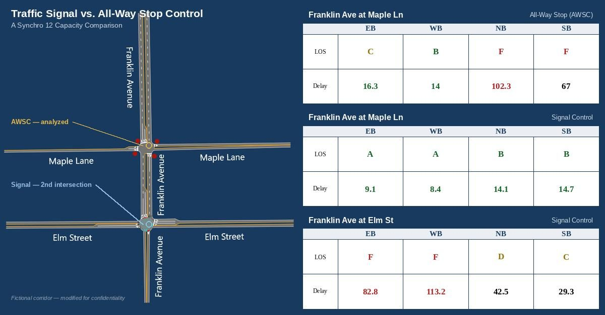
Traffic operations | INDOT 2026
A Synchro 12 corridor model that was implemented in the field, plus separate warrant analyses and capacity studies.
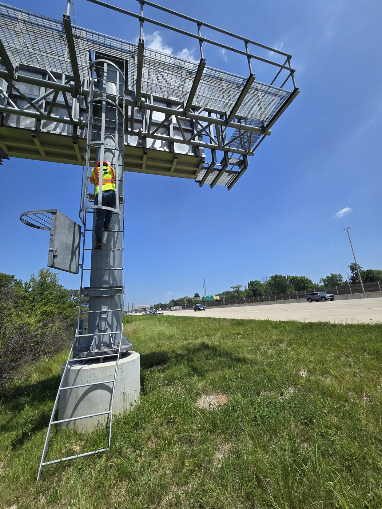
ITS | INDOT TMC 2026
Individually selected for a mentorship with INDOT ITS leadership, learning how Indiana's highways are managed in real time.
Safety | INDOT 2026
Crash data analysis, Road Safety Audits, and a signage audit that helps reduce district legal liability.
Read moreInteractive | Example Synchro 12 model
Switch the control type at Franklin Ave and Maple Ln and compare how each approach performs.
102.3 sdelay on the critical approach (NB)
| Approach | LOS | Delay |
|---|---|---|
| NBFranklin Ave | ||
| SBFranklin Ave | ||
| EBMaple Ln | ||
| WBMaple Ln |
LOS and delay come from my example Synchro 12 model, a fictional corridor with data modified for confidentiality. The vehicle animation is a simplified illustration, not the Synchro simulation.
Experience
Two summers in the Seymour District, first in construction and then in traffic and safety.
Governor's Summer Intern (GSI) | Seymour District


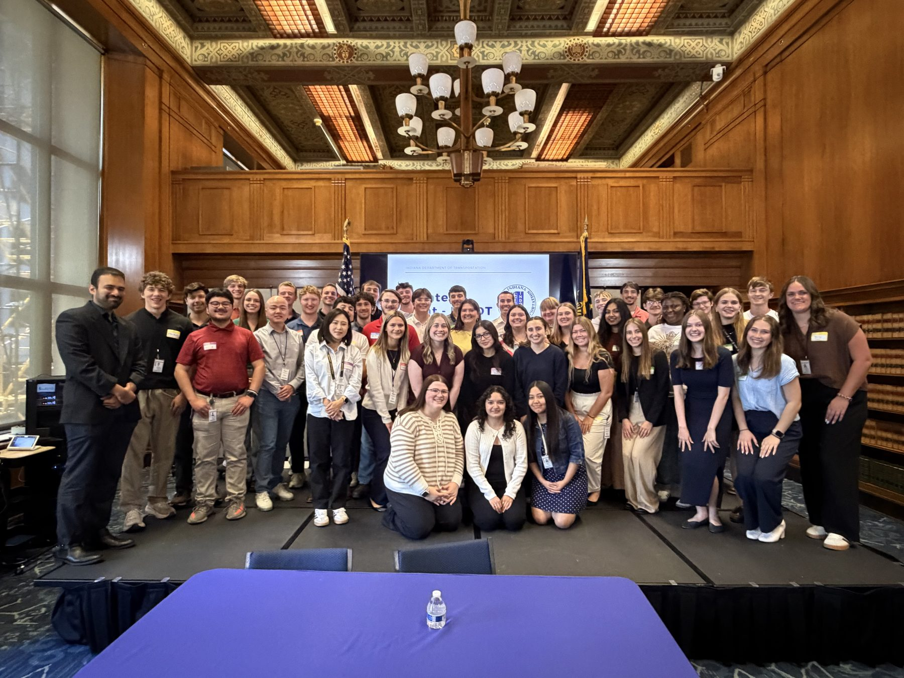
A separate training day put on by Dr. Darcy Bullock's Purdue team with INDOT presenters, on real-time traffic data, heat maps, connected vehicle penetration, and using CV data to spot safety issues like wrong-way driving with fewer field visits.


Nick was very eager to learn about INDOT ITS and asked lots of great questions. He takes initiative to reach out and learn hands on in the areas that interest him. He is very kind, smart, and a great person to work with!
Construction | Seymour District


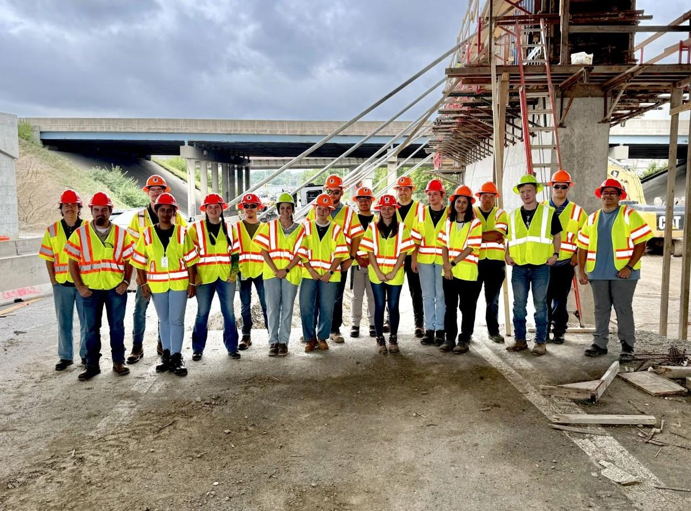
Leadership
Founded Trine's first ASCE Transportation & Development Institute (T&DI) group, focused on bridging the gap between classroom theory and real-world transportation engineering. I recruit the speakers, run the events, and design every graphic.
Indiana's transportation future depends on the next generation of civil engineers. I founded T&DI to put our students in the room with the people leading it.
ASCE | 2026–27
I serve on Trine's 2026–27 ASCE executive board as Founder & Chair of T&DI.
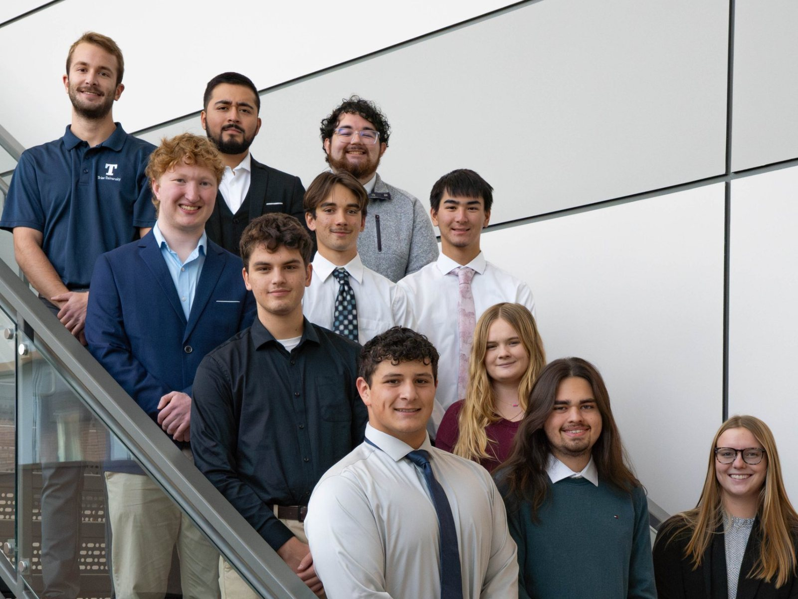

Sept 15, 2026 | Inaugural event
Virtual keynote and Q&A on INDOT's future, from autonomous vehicles and AI to the I-465 project and the agency's workforce. Co-hosted with Trine ITE and SWE. I coordinated the full event.
Covered byTrine News, WOWO, Herald Republican, 92.7 The Light, WLKI
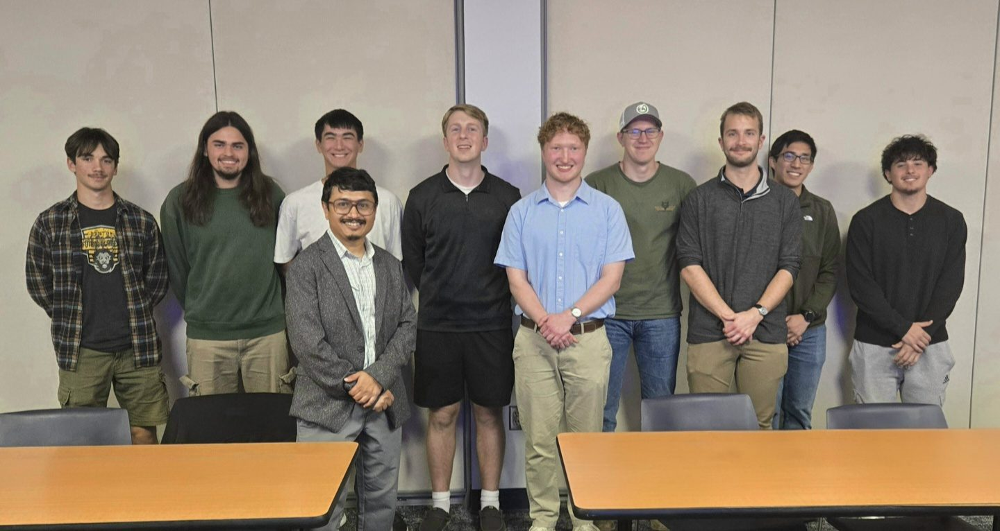
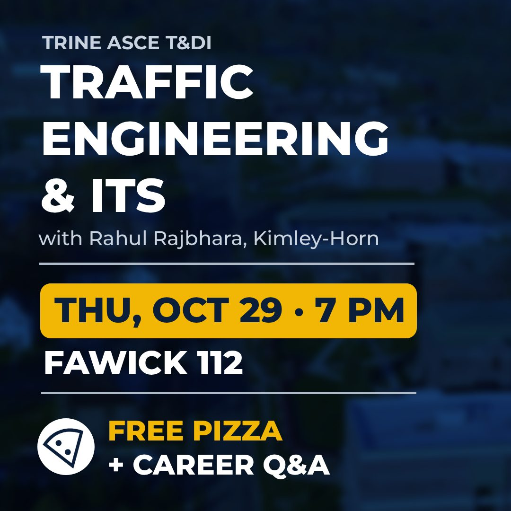
Oct 29, 2026
Talk and career Q&A with Rahul Rajbhara, PE, PTOE, RSP1, project manager at Kimley-Horn and ITE Indiana Vice President, covering road safety audits, ITS, and the software traffic engineers use every day.
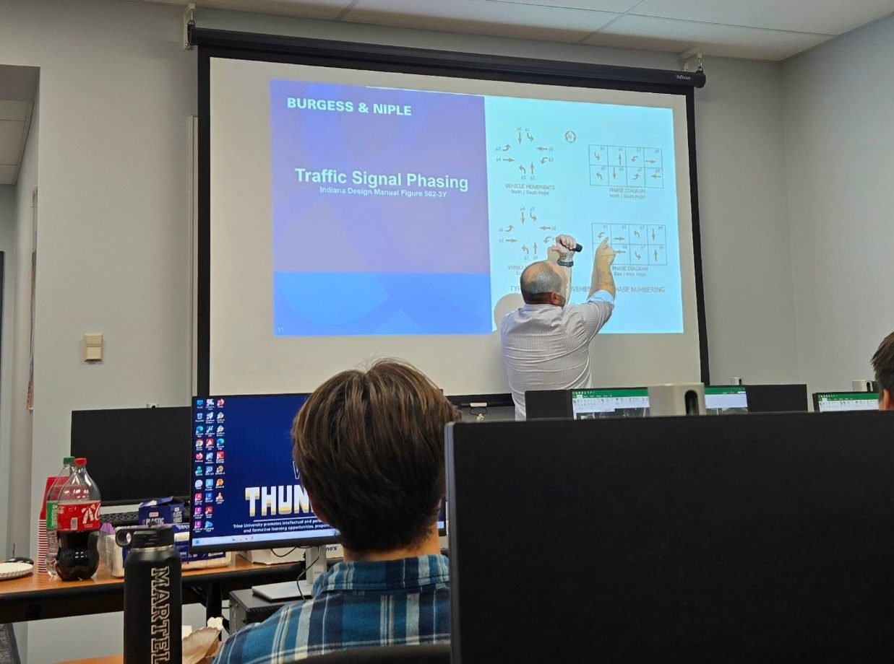
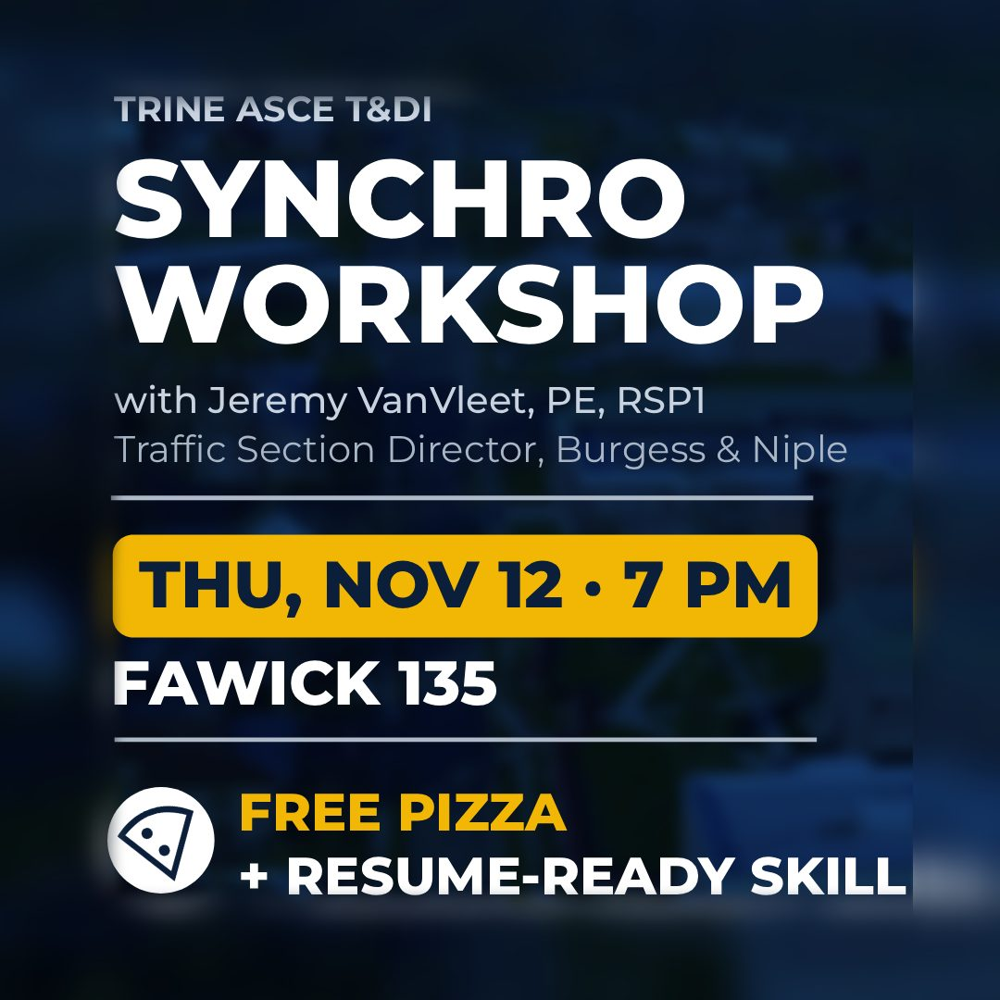
Nov 12, 2026
Jeremy VanVleet, PE, RSP1, Traffic Section Director at Burgess & Niple, led students through building and analyzing a signalized intersection on US 20 in Synchro, including signal phasing and timing.
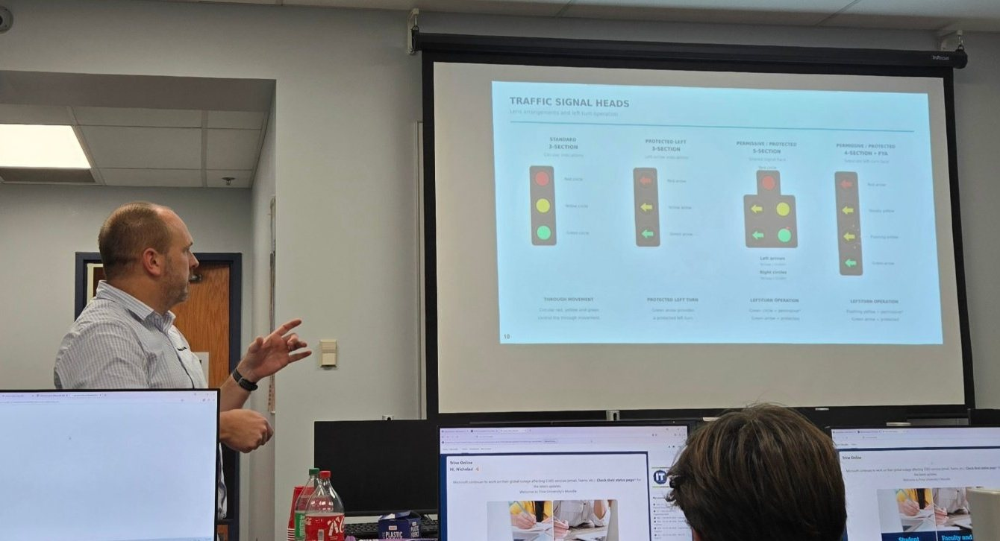
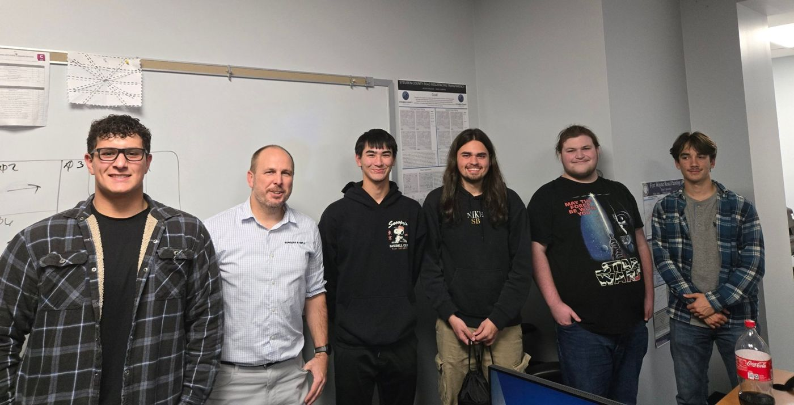
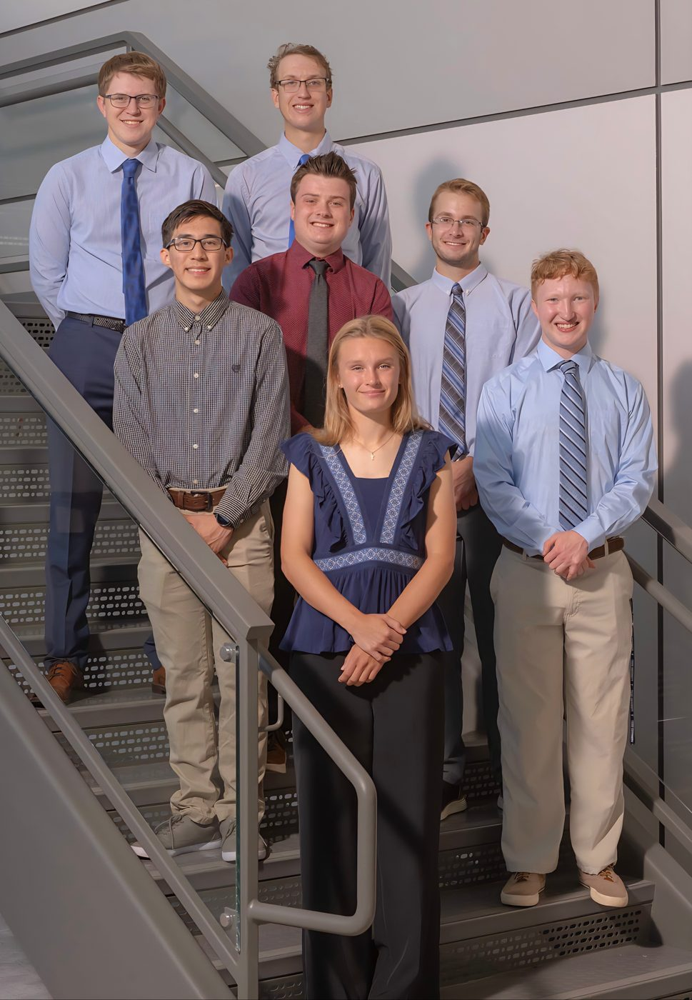
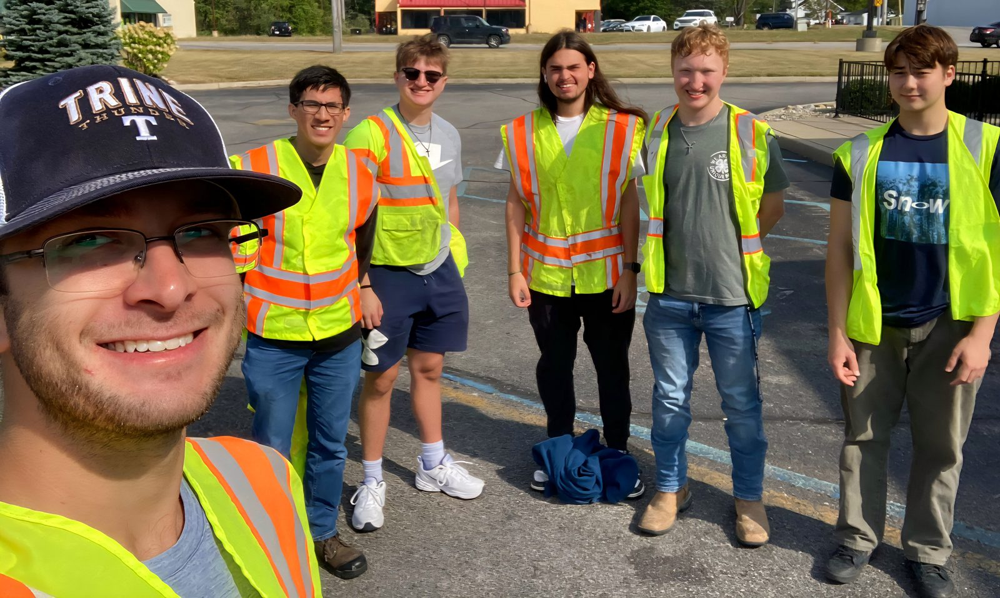
Aug 2025 – July 2026
Served on the executive board and led the chapter's Adopt-A-Highway program: 16 combined volunteer hours cleaning up North Wayne Street in Angola.

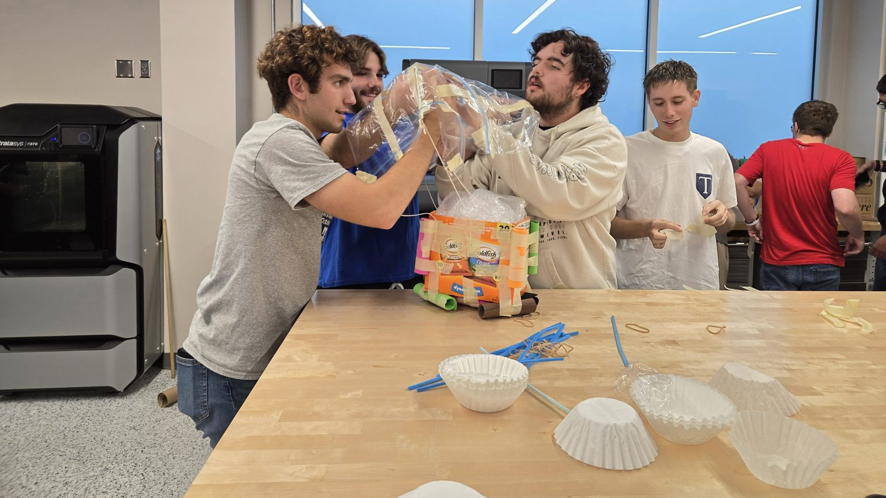
Aug 2025 – Present
Co-organized an Artemis II watch party (50+ attendees, with catering and campus event credit) and an engineering egg drop (30+).
July 2026 – Present
Institute of Transportation Engineers.
Honors & Awards
Nov 2026
Asphalt Pavement Association of Indiana
$2,500 scholarship recognizing academic achievement and potential as a future leader in Indiana's transportation industry.
July 2026
Governor's Summer Intern Program, State of Indiana
One of 17 recipients statewide across 160+ GSIs from all Indiana state agencies, for cross-agency partnership building with the INDOT Seymour District traffic and safety team.
State of Indiana announcement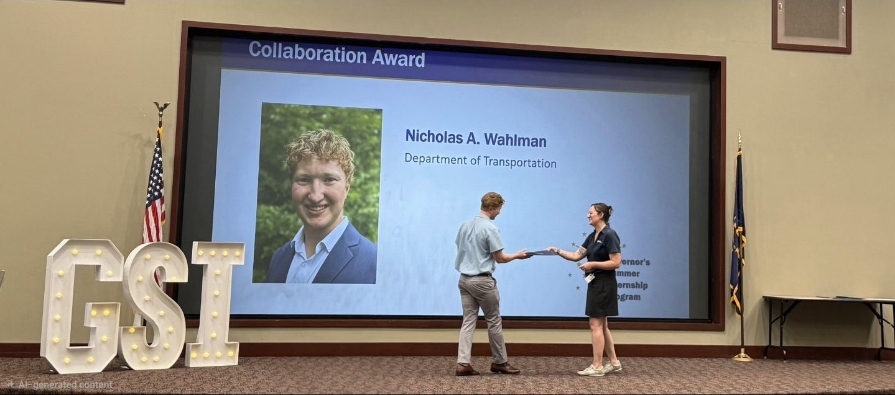


Skills & Education
Select an outlined skill to see where I used it.
Vision
I've always loved technology, and transportation is where I want to put it to work. My goal is to help pioneer ITS and smart mobility in Indiana: connected and automated vehicles, smarter traffic operations, and data that makes roads safer and more efficient.
How CAV technology and vehicle data can change the way agencies manage traffic and respond to safety problems.
Getting more out of the roads we already have through signals, ramp metering, and tools like dynamic shoulder lanes.
Using crash, volume, and connected vehicle data to find problems sooner and fix them with fewer field visits.
B.S. in Civil Engineering at Trine University, hands-on work at INDOT, and growing T&DI.
Gain experience in ITS and traffic operations and earn my EIT.
Earn my PE and help lead how Indiana brings new technology onto its roads.
Contact
Always open to connecting with transportation professionals, Trine alumni, and firms working in ITS and traffic engineering.